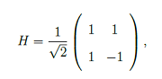
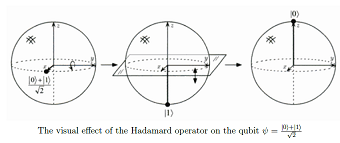

which is unitary and Hermitian. Even though it is called the square root of NOT operator, applying it twice does not create the NOT operator seen in classical computation. Since the operator is both unitary and Hermitian, applying the operator twice is the same as applying the identity operator and does not affect the state of the qubit. The figure below is an illustrated example of the Hadamard operator [1].
[1] Michael A. Nielsen and Isaac L. Chuang. Quantum Computation and Quantum Infor- mation. Cambridge University Press, 2000.